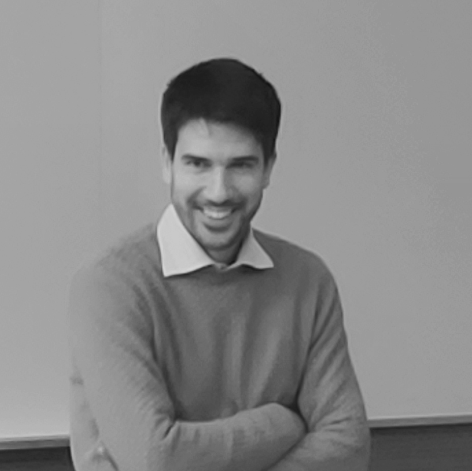

Francisco
Bersetche
Co-fundador
Es licenciado y doctor en matemática (UBA). Realiza su investigación sobre Machine Learning (aprendizaje automático) y Métodos numéricos en el Instituto de Investigaciones Matemáticas Luis A. Santaló (UBA-Conicet). Tiene experiencia en consultoría, más de una década en docencia y actualmente se desempeña como profesor adjunto en la Facultad de Ciencias Exactas y Naturales (UBA).

Mauro
Rodriguez
Cartabia
Co-fundador
Es licenciado y doctor en matemática y actuario (UBA). Realiza su investigación sobre Ecuaciones diferenciales y Teoría de juegos en el Instituto de Investigaciones Matemáticas Luis A. Santaló (UBA-Conicet). Tiene más de una década de experiencia docente, incluyendo el cargo de profesor adjunto en la Facultad de Ciencias Exactas y Naturales (UBA) y el de profesor invitado en el Departamento de Economía de la Universidad de San Andrés.